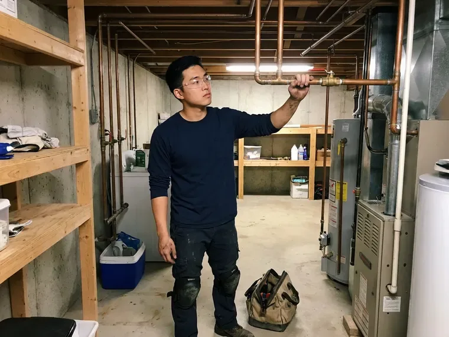

Shower Installation in Little Rock, AR
Ready for a new shower? DGR Plumbing offers professional shower installation services across Little Rock, AR.
- Valves Set to Code
- Licensed Plumbers
- Expert Plumbers
- Clear Pricing

Professional Shower Installation for Your Bathroom Remodel in Little Rock, AR.
Call DGR Plumbing today for professional shower installation services that meet local codes and your specific needs.
Shower Installation for New Bathrooms and Remodels in Little Rock, AR
DGR Plumbing installs the plumbing for new showers, including valves, supply lines, shower arms, body sprays, pans and drains. We set each component at the right height and depth for your finished wall and pressure-test before tile goes on. That safeguards your investment from leaks you cannot see.
Our expertise includes:
- Pressure-balance and thermostatic valve rough-in for new showers
- Precision fitting for all shower types
- Ensure proper water sealing and drainage

Additional Bathroom Plumbing Services in Little Rock, AR
From toilets to showers, our bathroom plumbing team in Little Rock, AR handles repairs, installs, and upgrades with tidy, code-compliant work.


Customers
Why Choose DGR Plumbing for Shower Installation in Little Rock, AR?
We work closely with tile setters and contractors so valve depth, drain height and slope all match the finished surfaces. That prevents gaps, leaks and expensive rework.
- Customer Satisfaction, Your complete satisfaction is our goal, backed by our focus on quality workmanship.
- Correct Slope, Pans and drains are set so water drains fully without puddles.
- Quality Materials, We use only high-grade plumbing components designed for longevity and performance in local water conditions.
Citywide Coverage
No matter where you are located in Little Rock, our experienced plumbers are just a call away for your shower installation project. We are familiar with the varied housing styles across Little Rock, ensuring tailored solutions for every home.
Experienced Team
Our plumbers have roughed in hundreds of shower valves from Moen, Delta, Kohler, Grohe and Hansgrohe. They know each brand's rough-in depth and installation specs.
Safety-First Approach
Safety and code compliance are paramount in every shower installation we perform. We strictly follow all local Little Rock and state plumbing codes, ensuring your new shower is safe and up to standard.
Trusted Certified Little Rock Plumbing Services Professionals
At DGR Plumbing, we take pride in providing licensed, certified plumbing services throughout Little Rock, AR. Backed by leading industry credentials, our experienced plumbers combine technical skill with genuine customer care. Whether it is repair, installation, or maintenance, we follow strict safety and quality standards to deliver lasting results you can trust.
Call Us Now PHCC Plumbing Contractor Recognition
PHCC Plumbing Contractor Recognition Better Business Bureau (BBB) Accreditation
Better Business Bureau (BBB) Accreditation Angi Certified Pro
Angi Certified Pro ISO 9001 Quality Management Certification
ISO 9001 Quality Management CertificationCustom Shower Installation Services in Little Rock, AR
Rain and Multi-Head Shower Installation in Little Rock
Rain showerheads, body sprays and dual heads need careful planning for valve capacity and water pressure. We install thermostatic valves with volume controls and diverters to run multiple outlets. We also confirm your water heater can keep up with higher flow. The result is a spa-like shower that works as intended.

New Construction Shower Installation in Little Rock, AR
For new homes and additions, we rough in shower valves, supply lines and drains during framing. Valves are set to depth for the planned wall finish, and drains are located for the chosen pan. We pass rough-in inspections and return to install trim after tile. Our scheduling keeps your build on schedule.
Emergency Shower Replacement in Little Rock
While installation is often planned, sometimes a damaged or severely leaking shower requires immediate replacement. DGR Plumbing provides emergency shower replacement services to quickly address critical failures. We can often install a new, standard shower unit to restore your bathroom without delay. Our rapid response team works to limit water damage and inconvenience.
Cost-Effective Shower Upgrades in Little Rock, AR
Investing in a new shower can significantly improve your home's value and comfort. DGR Plumbing helps homeowners in Little Rock choose cost-effective shower solutions that fit their budget and needs. We go over various options, from basic, durable units to more elaborate, water-saving models. Our clear pricing means you know the full cost upfront, allowing you to make an informed decision without hidden fees.
Steam Shower Plumbing in Little Rock
Steam showers need a steam generator, a dedicated water supply, a drain line and an electrical circuit. We install the generator, plumb the supply and drain, and connect the steam head. A licensed electrician handles the circuit. Steam showers also need sealed enclosures and angled ceilings.
Custom Shower System Installation in Little Rock, AR
For homeowners looking for a more personalized bathing experience, DGR Plumbing provides custom shower system installations. This includes multi-head showers, rain showerheads, body jets, and steam shower units. We carefully plan the plumbing layout to accommodate multiple fixtures and ensure adequate water supply and pressure. Our expertise means that complex systems function seamlessly.
Commercial Shower Installation in Little Rock, AR
DGR Plumbing also offers shower installation services for commercial properties in Little Rock, such as gyms, locker rooms, and employee facilities. We understand the higher demands of commercial plumbing systems and install durable, high-capacity showers designed for heavy use. Our installations meet commercial building codes and keep downtime to a minimum for your business during the process. We work steadily to complete projects on schedule.

Tub-to-Shower Conversion in Little Rock, AR
Converting an old tub to a walk-in shower is one of the most popular bathroom upgrades. We remove the tub, relocate or resize the drain and install a new shower valve at the right height. On slab foundations, the drain may need to be moved, which involves cutting concrete. The result is a safer, more usable shower.
Shower Installation Near Me in Little Rock, AR
Our plumbers are local to Little Rock and understand area homes, foundations and permit requirements. We give clear pricing and test everything before walls close. Every installation is backed by our workmanship guarantee.
When you search for shower installation near me in Little Rock, AR, DGR Plumbing is your local, reliable choice. We take pride in fast response times and thorough service, ensuring your new shower is installed correctly and efficiently. Our location allows us to quickly send a skilled plumber to your doorstep.
DGR Plumbing at a Glance
- Licensed and insured plumbers serving Little Rock, AR
- Same-day appointments and 24/7 emergency response
- Upfront, flat-rate pricing before work begins
- 4.8-star rated by 871+ Arkansas customers
Little Rock Map
Little Rock Information
- Population
- 203,842
- Area codes
- 501/870/580
- Service area
- Little Rock and communities within 40 miles
- Nearby
- North Little Rock, Sherwood, Benton, Conway
Hot, humid summers dominate the plumbing picture in Arkansas, with crawlspace moisture and sweating cold lines causing quiet damage. In Little Rock, AR, proper shower installation is essential to prevent water damage to your home's foundation and structure, since even small leaks can grow into bigger problems.
Expert Services
Trust our professionals for reliable DGR Plumbing solutions in Little Rock, AR.
Our Specialized Plumbing Services in Little Rock, AR
At DGR Plumbing, we provide a complete range of plumbing services across Little Rock, AR. From leak detection to full system installations, our team ensures fast, precise, and affordable service for both residential and commercial properties. Explore our core services below:


How Our Shower Installation Process Works in Little Rock, AR
Installing a new shower takes planning. Here is how we keep it easy.
Request a Quote
Call (501) 251-9708 to talk through your shower plans and timeline. We provide a detailed quote for the plumbing work.
Rough-In and Test
We install the valve, supply lines and drain and pressure-test before walls close. Pans are flood-tested before tile is set.
Trim and Finish
After tile is complete, we install the showerhead, handles and trim. We test pressure and temperature and tidy up.
Frequently Asked Questions About Shower Installation in Little Rock
Shower plumbing for a remodel, including valve, drain and trim, typically costs $1,200 to $3,500. Full walk-in showers with tile, glass and plumbing often total $8,000 to $20,000 or more. Prefab units are usually less.
Valves and fixtures carry manufacturer warranties, many lifetime for the original owner. We also stand behind our workmanship.
DIY shower installation is generally not recommended due to the complexity of plumbing connections, waterproofing, and local building codes. Improper installation can lead to costly leaks, water damage, mold growth, and unsafe conditions. Hiring a professional like DGR Plumbing ensures the job is done correctly, safely, and to code, saving you potential headaches and expenses down the line.
Yes, DGR Plumbing frequently performs tub-to-shower conversions in Little Rock homes. This involves removing the existing bathtub and installing a new shower base, walls, and fixtures. It is a common option for improving accessibility and modernizing bathrooms without a full remodel. We make sure all new plumbing connections are correctly installed and sealed.
DGR Plumbing stands behind our shower installations with a solid warranty on our workmanship, typically for one year. Manufacturer warranties on the shower unit and fixtures will also apply, usually ranging from one year to a lifetime, depending on the brand and component. We provide all warranty details before beginning work.
A standard shower installation, such as a tub-shower replacement, can often be completed within one to two days. More complex projects, like custom tiled walk-in showers or those requiring significant plumbing rerouting, might take three to five days, or longer if extensive demolition or structural changes are involved. We provide an estimated timeline during your initial consultation.
Pressure-balance valves keep the hot and cold ratio steady when pressure changes. Thermostatic valves control the actual temperature and allow separate volume control, which suits multi-head showers.
Yes, but they typically require recessing the slab in the shower area. We plan the slope and drain placement carefully with your contractor.
What People Are Saying About Our Plumbing Experts?

Emily R.
I called DGR Plumbing for plumbing repair, and the technician was fast, polite, and thorough. They explained the problem clearly and fixed it the same day. I will definitely hire them again. Highly recommended!
Plumbing Repair · Sherwood, AR
Sofia M.
Two new toilets installed in one visit, no mess left behind, and the tech even adjusted a faucet he noticed was dripping. Fair pricing and really friendly.
Toilet Installation · North Little Rock, AR
Robert G.
The trenchless sewer replacement saved our front yard. They walked us through the camera inspection footage first so we knew exactly what we were paying for.
Sewer Line Replacement · Pine Bluff, ARLaura S.
I scheduled a water heater replacement, and the team made the process smooth and affordable. The new unit works perfectly, and they cleaned up after completing the job.
Water Heater Replacement · Pine Bluff, AR
Daniel K.
A pipe burst at 11 pm and they actually answered. The plumber showed up within the hour, shut everything down, and had us back to normal the next morning. Could not ask for more.
Emergency Plumbing · Conway, AR
Mark T.
When our office needed drain cleaning, DGR Plumbing provided quick, reliable service. The plumber arrived on time and made sure every drain flowed perfectly before leaving. Very satisfied.
Drain Cleaning · Pine Bluff, AR